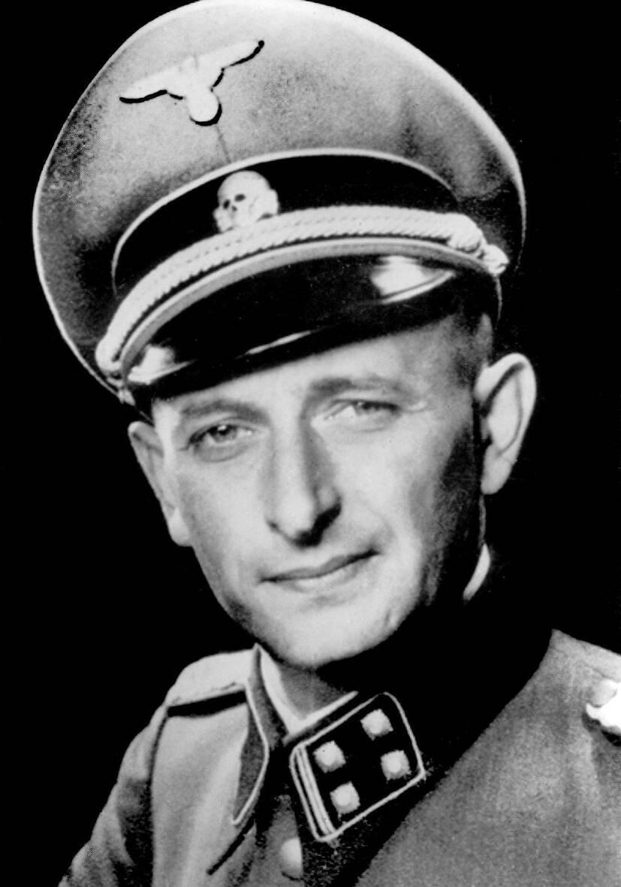
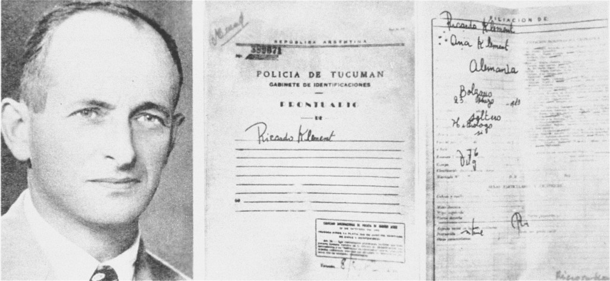
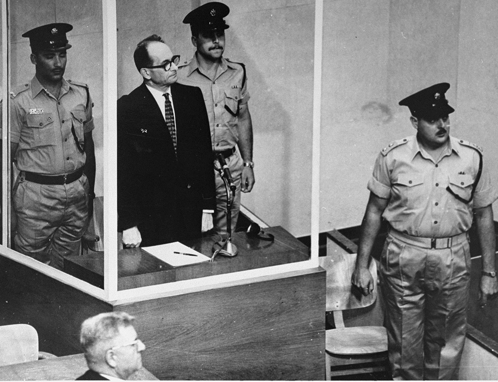

Adolf Eichmann and Operation Finale
SS-Obersturmbannführer Adolf Eichmann was a key logistical organizer of the Holocaust, coordinating mass deportations across Nazi-occupied Europe before fleeing to Argentina after World War II and being captured by Israeli intelligence operatives in May 1960.

Deportations and the Machinery of the "Final Solution"
Within the Reich Main Security Office (RSHA), Eichmann's office handled emigration, forced displacement, and eventually large-scale deportations of Jews to ghettos, concentration camps, and extermination centers.
Working closely with railway authorities, police, and local officials, he helped turn mass murder into a cold, scheduled bureaucratic operation across much of occupied Europe.

Flight to South America and Life as "Ricardo Klement"
After Germany's defeat in 1945, Eichmann evaded capture and made his way to Argentina in 1950 using forged documents, living under the alias Ricardo Klement.
For years he worked low-profile jobs while family members eventually joined him, even as investigators and witnesses—including information gathered by Fritz Bauer and others—helped narrow down his whereabouts.

Operation Finale, Capture, and Trial in Jerusalem
In May 1960, Israeli intelligence operatives carried out Operation Finale in a suburb of Buenos Aires, detaining Eichmann after confirming his identity and flying him secretly to Israel.
His 1961 trial in Jerusalem brought extensive survivor testimony and archival evidence into global view, ending in his conviction and execution in 1962.